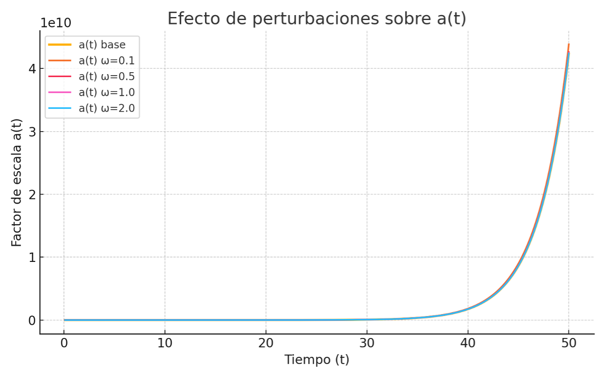
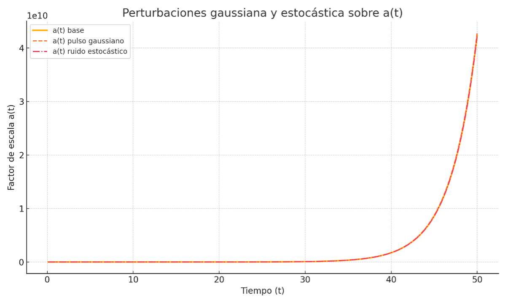

This section explores the consequences of introducing small perturbations in the energy density function ρ(t) within the IE Model. The goal is to understand how these perturbations propagate through the evolution of a(t), modify the rate of iterances, and manifest as observable features in the cosmic spectrum.
Investigate the dynamic effects of slight modulations over the standard energy evolution curve and their impact on the scale factor a(t) and derived observables like gravitational echoes, CMB anisotropies, or fast transient signals.
We start with the standard energy density function:
ρ_IE(t) = ρ_∞ + (ρ₀ − ρ_∞) / [1 + (t / t_s)^α]
We then apply a perturbation of the form:
ρ(t) = ρ_IE(t) · [1 + ε · f(t)]
Simulations are run using sinusoidal perturbations:
Figure 8.2.1: Evolution of a(t) with different ω values
The following figure illustrates how different perturbation types affect the system:
Figure 8.2.2: Comparison between Gaussian and stochastic perturbation effects
Even minimal perturbations applied to the IE energy evolution produce identifiable deviations in the expansion rate and spectrum. These deviations may provide theoretical support for observational phenomena such as fast radio bursts (FRBs), echoes in gravitational wave detectors, or CMB irregularities, all stemming from modal dynamics within the remnant quantum structure.